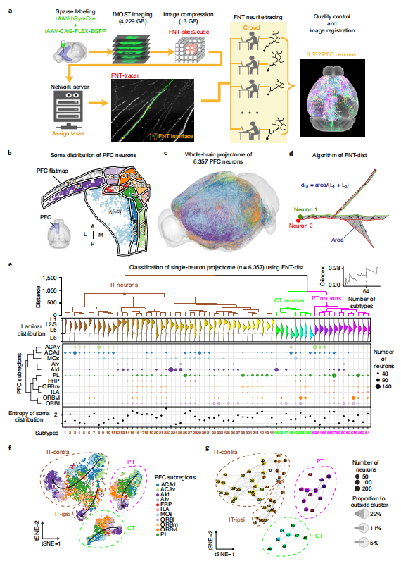
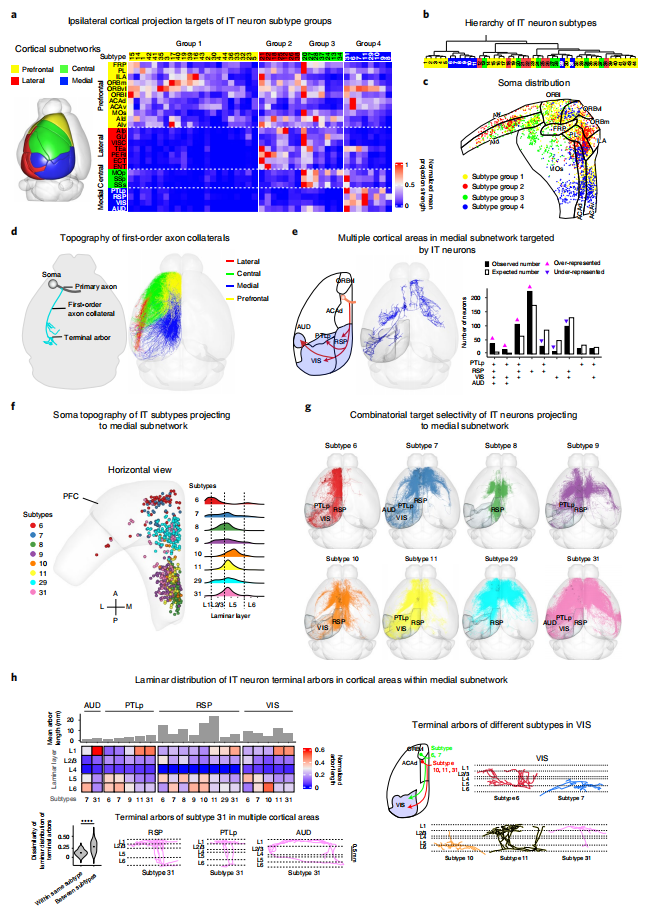
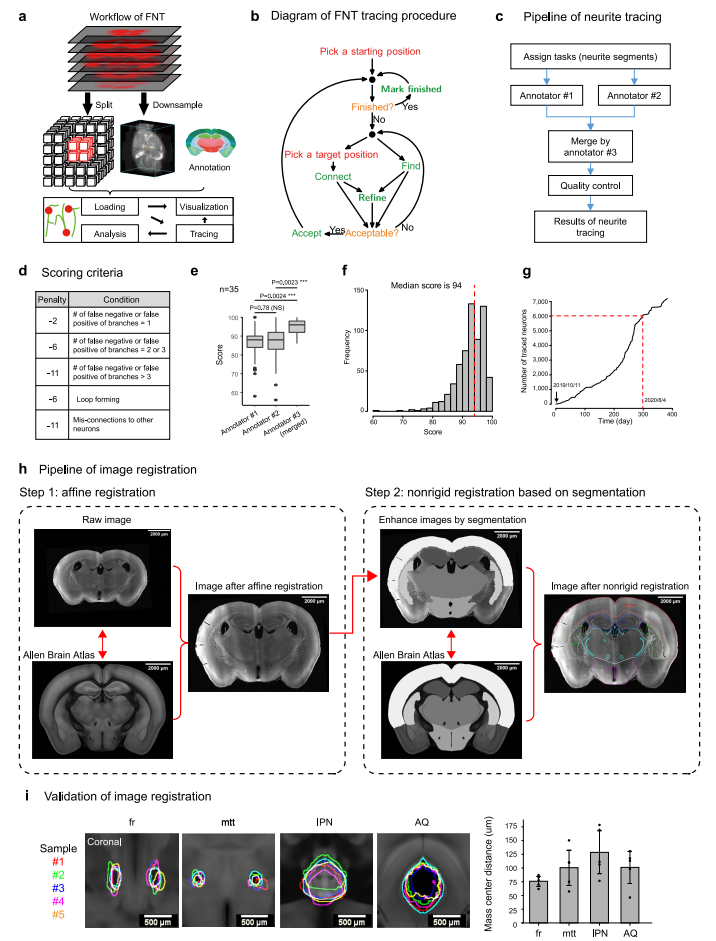
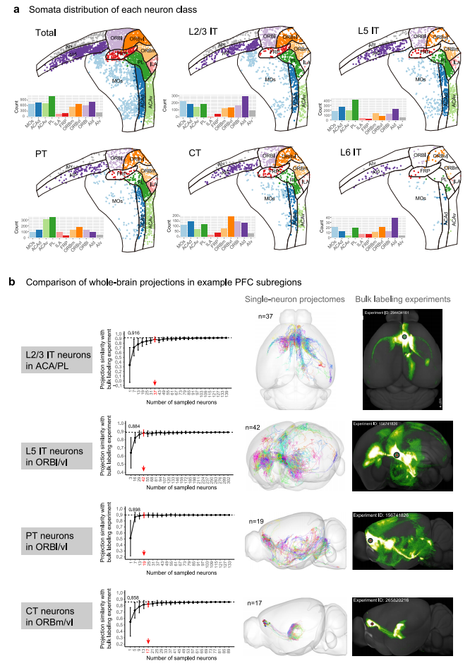
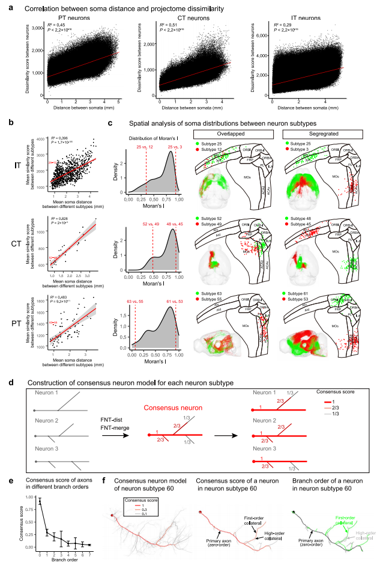

文献阅读 --- Single-neuron projectome of mouse prefrontal cortex
文献信息
题目: 小鼠前额叶皮层单神经元投射组
DOI: https://doi.org/10.1038/s41593-022-01041-5
Cite: Gao, L., Liu, S., Gou, L. et al. Single-neuron projectome of mouse prefrontal cortex. Nat Neurosci (2022).
SUMMARY：
前额叶皮层（PFC）是整合和调节整体大脑活动的认知中心。然而，PFC 轴突投射的全脑组织仍不清楚。利用 6,357 个小鼠 PFC 投射神经元的单神经元重建，我们确定了 64 个投射组定义的亚型。先前已知的四种主要的皮质-皮质亚网络中的每一种都被一组不同的 PFC 亚型的一级轴突侧支所定义。进一步分析揭示了 PFC 内神经元体细胞分布的 topographic rules、一级侧支点依赖的 target 选择和末端轴分布依赖的 target 细分。此外，我们在 PFC 和三个不同的功能相关的 PFC 模块中获得了一个高精度的层次图，每个模块都丰富了内部循环连通性。最后，我们发现每个转录组亚型对应于在不同的 PFC 亚区域中发现的多个投射组亚型。因此，全脑单神经元投射组分析揭示了 PFC 内外轴突投射的组织原理，并为阐明不同 PFC 功能背后的神经元连接提供了必要的基础。
Introduction：
长程投射神经元对于大脑内神经信息的交流至关重要。在 neocortex（新皮质）中，长程投射神经元按照投射模式大致分为三类：端脑内投射（intratelencephalic，IT）神经元、锥体束（pyramidal tract，PT）神经元和皮质丘脑（corticothalamic，CT）神经元。通过使用基于病毒的追踪和神经元类特异性 Cre 系，已经获得了神经元群体水平上的小鼠介镜投射组。最近几项基于单细胞RNA测序（scRNA-seq）的研究表明，在三个广泛定义的神经元类别中，转录组定义的亚型高度多样化，在不同皮层区域差异很大。另一方面，逆行标记和 scRNA-seq 揭示了 mPFC 神经元的转录组亚型与其投射靶点之间的多对多对应关系。然而，要确定单个 PFC 神经元是否需要投射到多个特定目标，就需要重建单个稀疏标记神经元的投射模式。这种对 PFC 神经元的单神经元投射组分析，其规模与 scRNA-seq 相当，对于更全面地了解神经元亚型的多样性及其投射组的组织原理是必需的。然而，基于 tb(TB)成像数据对大量单神经元投射体的全脑追踪是一个艰巨的挑战。
PFC 是高级认知功能的中心，包括决策、工作记忆、情绪、注意力、感知，并与许多神经精神疾病有关。基于神经元群体的整体标记的全脑连接已经表明，小鼠 PFC 与几乎所有的大脑区域都有广泛的连接。更精确的单个神经元的远程投射模式将为不同亚型的 PFC 神经元提供进一步的功能特异性。虽然 PFC 和其他皮质区域之间的层次关系最近已经被描述出来，但 PFC 内的亚区域的层次排序仍有待澄清。因此，PFC 单神经元投射组的系统表征对于阐明 PFC 内外的精确连接至关重要。
在这项研究中，我们开发了一个软件包，Fast Neurite Tracer（FNT），用于高通量投射组重建和分析 TB-sized 的光显微镜成像数据。利用 FNT，我们绘制了小鼠 PFC 中 6,357 个投射神经元的长程投射，并确定了 64 个投射组亚型。我们确定了不同的投射组亚型投射到四个皮质-皮质亚网络的每一个。有趣的是，投射组分析显示，一阶轴突侧枝的分离可以定义不同的子网络。进一步分析还发现，各亚型的细胞体 在 PFC 内具有特定的 topography 分布；主轴突上的侧支位置与 target 的距离有关；并且轴突末端的分布将 target 分为 subdomains。此外，基于投射组的 intra-PFC 连接性分析让我们可以定义 PFC subregions 和三个不同的 intra-PFC modules 的层次顺序。最后，对单细胞转录组和投射组的联合分析表明，相同的转录组亚型对应于在不同的 PFC subregions 中发现的多个投射组亚型。综上所述，这项工作为单神经元水平上的小鼠 PFC 投射组提供了一个全面的资源，并展示了如何利用该资源来揭示全脑 PFC 投射的组织原理。
Results：
PFC投射神经元的重建和分类
我们稀疏地标记了小鼠 PFC 的投射神经元。采用荧光显微光学切片断层扫描 (fluorescence micro-optical sectioning tomography, fMOST) 技术采集了161只小鼠的全脑图像 (Fig. 1a, Methods, Supplementary Fig. 1 and Supplementary Table 1)。我们开发了一个集成软件包 (FNT)，其中包括总共 16 个计算机程序，以简化数据处理 (FNT-slice2cube)、追踪 (FNT-tracer) 和可视化 (FNT-viewer) 长程轴突投射，在 TB-size microscopic 数据中 (Extended Data Fig. 1, Supplementary Methods 1 and 2 and Supplementary Video 1)。
使用 FNT，共重建了 6,357 个 PFC 投射神经元 (Extended Data Fig. 1d–f)。所有重建轴突的总长度为 783.27m。我们将所有追踪到的轴突投射都注册到了 Allen Brain Atlas (ABA)的参考大脑中 (Extended Data Fig. 1h,i)。在这里，我们考虑了 ABA 中的 PFC 区域，包括 prelimbic (PL), infralimbic (ILA), frontal pole (FRP), orbito-frontal (ORB), dorsal and ventral agranular insular (AId/v), anterior cingulate (ACA) and secondary motor (MOs) areas (Fig. 1b)。脑结构的缩写见 Supplementary Table 2。我们纳入了 AId/v，因为它们也接收到来自丘脑中背核 (MD) 的投射。重建的 PFC 神经元的全脑投射如 Fig.1c 所示。所有的投射组数据都可以在我们的网站上进行浏览、可视化和分析 (https://mouse.braindatacenter.cn) (Supplementary Video 2)。
接下来，我们对所有PFC投射神经元的轴突进行对齐，并使用严格的动态规划算法 (FNT-dist) 计算其轴突形态的两两差异得分 (Fig.1d and Supplementary Method 2)。然后对这些神经元进行无监督层次聚类进行聚类 (Fig.1e and Methods)。这些投射神经元可以很容易地分为 IT、PT 和 CT 三大类，IT 广泛位于从 L2/3 到 L6，PT 位于 L5，CT 位于 L5 和 L6 (Fig.1e)，分布在PFC区域 (Extended Data Fig.2a)。在我们分析的所有 PFC 神经元中，IT 神经元是最丰富的 (3,744)，可分为同侧投射 (IT-ipsi) 和对侧投射 (IT-contra)神经元，其次是 PT (1,528) 和 CT 神经元 (1,085)。比较我们的单神经元投射组数据集与之前的批量标记结果进行空间位置匹配，结合单神经元投射组和批量标记实验的全脑投射显著相似 (0.9，皮尔逊相关系数)，表明单神经元投射组再现了批量标记结果 (Extended Data Fig.2b)。基于聚类分析，我们进一步将 IT、PT、CT 神经元划分为 64 个亚型 (44 for IT, 12 for PT, 8 for CT) (Fig.1e)。这 64 个亚型的详细形态和细胞体分布详见 Supplementary Figs.2–4, Supplementary Table 4 and Supplementary Video 3。
我们发现，每个 subtype 神经元的细胞体位置在 laminar layers 和 PFC subregions 上表现出不同的空间模式 (Fig.1e)。我们计算了跨 PFC subregions 的细胞体分布的熵，作为每个 subtype 的亚区域特异性的定量测量，发现熵值在不同亚型之间差异很大。大多数（38 of 64）神经元 subtypes 是 subregion-specific 或 subregion-biased subtypes，每个 subtypes 只覆盖2-5个 PFC subregions 。但一些 subtypes，如 subtypes22，是存在于几乎所有 PFC subregions 的 homologous subtypes (Fig.1e, Supplementary Table 4 and Methods)。采用 t-SNE 和星座图的方法，显示了64个 projection subtypes 之间的关系(Fig.1f,g)。有趣的是，我们发现 IT、PT和CT神经元的细胞体位置与轴突投射之间存在 topographic correspondence (Extended Data Fig.3a)，揭示了轴突投射模式从 ACA 到 AId/v 沿中外侧轴的整体渐进变化(Fig. 1f)。在 IT、PT和CT神经元中，细胞体位置分别占投射变异的 29%、45%和51%，说明细胞体位置并不是影响轴突投射的唯一因素(Extended Data Fig.3a)。此外，我们还分析了每对 subtypes 的细胞体分布之间的详细关系，发现它们的细胞体范围从完全分离到部分重叠取决于 subtype (Extended Data Fig.3b,c)。因此，PFC内的细胞体位置对神经元的长程投射模式有很强的影响，但并不能完全解释投射的多样性。
此外，我们利用 FNT-merge 对每个 subtype 中所有神经元的轴突进行对齐来构建一个共识的神经元模型(Extended Data Fig.3d, Supplementary Figs.2–4 and Supplementary Method 2)。我们发现，初级轴突和一阶轴突侧支在每个 subtype 内很大程度上是保守的，但各 subtype 之间存在显著差异，各 subtype 中高阶侧支的变异随着顺序的增加而逐渐增加 (Extended Data Fig.3e,f)。
Figure
Fig1

Fig. 1 | PFC投射神经元的投射组重建与分类
a. PFC单神经元投射组重建的 pipeline，包括 sparse labeling、fMOST imaging、 image compression using FNT-slice2cube、neurite tracing using FNT-tracer、quality control and image registration。
b. PFC 平面图上显示 PFC 神经元的细胞体分布。对不同 PFC 区域的神经元细胞体进行了颜色编码。
c. 所有追踪的 PFC 神经元的全脑投射组，其轴突根据其在(b)中的细胞体进行颜色编码。
d. FNT-dist 算法。两个神经元(d12)的投射体之间的差异被量化为阴影区域除以它们的总轴突长度L1和L2的总和 (Supplementary Method 2)。
e. 基于其投射组的 PFC 神经元的层次聚类 (Methods)。Top，64个 subtypes 的层次树（颜色编码）。在右上角，绘制了不同的 subtype 数目的 C-index。在 C-index 的局部最小值下确定了64个亚型。这些亚型的体的层流 (中上)和区域 (中下) 分布。颜色和大小代表了 PFC 亚区域和在 6357 个 PFC 神经元中发现的神经元数量。底部，这些亚型的11个 PFC 亚区的躯体分布的熵 (Methods)。较低的熵意味着较高的区域特异性。
f. 基于 FNT-dist 计算的不同矩阵，所有分类的 IT(IT-ontra/IT-ipsi)、PT 和 CT 神经元的 T-SNE 图。箭头表示这些细胞体从 ACA 到 AId/v 的神经元投射的整体梯度。
g. 64个亚型的投射组之间的关系的星座图 (用灰色线标记)(Methods)。每个点代表一个位于 t-SNE 坐标中 subtype 质心的神经元亚型，点的大小与亚型中的神经元数量成正比，并按亚型进行颜色编码。在连接两个子类型的灰色线上，一个子类型的端点大小代表该子类型中每个神经元在 t-SNE 坐标中 15 个最近邻与另一个连接子类型的平均比例，并缩放到节点大小。
Fig2

Extended Figure
Extended Data Fig.1

Extended Data Fig.1 | 设计与应用 FNT 和图像配准
a. FNT workflow
b. FNT tracing 程序的示图。红色表示需要精确点击鼠标的操作。橙色表示需要旋转、缩放和用户观察的操作。绿色表示需要单个键敲击的操作。绿色操作比其他操作要快得多。
c. 通过 multiple tracers 追踪神经元轴突的 Pipeline。每个神经元首先由两个独立的注释者追踪，然后由第三个注释者合并 (see Methods for detailed information)。
d. 评价神经元轴突示踪质量的评分方案。
e. 在合并了来自两个独立的注释者的结果后，质量分数显著提高。35个神经元由两个注释者独立注释 (n = 35, NS P> 0.05, ***P< 0.001, two-sided Wilcoxon signed-rank test)。Boxplot: edges, 25th and 75th percentiles；central line, the median; whiskers, 1.5×the interquartile range of the edges; dots, outliers.
f. 600个随机抽样神经元合并结果的质量分数分布。
g. 随着时间的推移，被追踪的神经元的累积数量。
h. Pipeline of image registration. Step1 involves affine registration and step 2 involves non-rigid registration (see also Methods)。
i. Validation of image registration. 检测来自不同 fMOST 样本 (n = 5) 的4个脑结构之间的质心距离(fr, fasciculus; mtt, mammillothalamic tract; IPN, interpeduncular nucleus; AQ, cerebral aqueduct)。Data are presented as mean ± s.e.m.
Extended Data Fig.2

Extended Data Fig.2 | 各神经元类神经元细胞体分布及与批量标记实验的比较
a. L2/3 IT、L5 IT、PT、CT、L6 IT 神经元在 PFC flatmap 中的细胞体分布。条形图显示了11个 CCFv3 注释的 PFC subregions 中重建的神经元数量。
b. 与 example PFC subregions 的整体标记实验的比较。For L2/3 IT neurons in ACA/PL, L5 IT neurons in ORBl/vl, PT neurons in ORBl/vl, and CT neurons in ORBm/vl, 计算了全脑投射的整体标记实验与重建的单神经元投射组在匹配的空间位置上的投射相似性 (see Methods)。第一列，全脑投射的整体标记实验与从选定的重建神经元数量中提取的组合单神经元投射组之间的投射相似性。红色箭头表示采样神经元的数量，可以在很大程度上概括批量标记实验。数据用 mean ± s.e.m 表示。第二列，单神经元投射组的可视化。神经元被随机着色。第三列，从 Allen Mouse Brain Connectivity Atlas 中获得相关批量标记实验的可视化。
Extended Data Fig.3

Extended Data Fig.3 | 细胞体距离与投射组差异的关系，共识神经元模型
a. 细胞体距离与投射组的差异呈正相关 (PT neurons: R2= 0.45, P< 2.2 × 10−16; CT neurons: R2= 0.51, P< 2.2 × 10−16; IT neurons: R2= 0.29, P< 2.2 × 10−16)。每个点表示一对神经元。细胞体距离计算为两个细胞体之间的欧氏距离。
b. 每个亚型对的平均细胞体距离和平均投射组差异呈正相关。每个点表示一对神经元亚型。回归线周围的阴影区域表示95%的置信区间。对 IT、CT和PT神经元分别用红点表示一个偏离线性相关的神经元亚型的示例亚型对 (IT: subtypes 25 and 12; CT: subtypes 52 and 49; PT: subtypes 63 and 55)。其形态和细胞体分布见c。取亚型内每个神经元对之间的细胞体距离和投射组差异的平均值。
c. 神经元亚型间细胞体分布的空间分析。对于每对 IT、PT和CT神经元亚型，分别根据它们的细胞体空间分布计算Moran’s I (see Methods)。显示了 IT、PT和CT神经元的神经元亚型对的示例，其细胞体分布重叠 (IT: subtypes 25 and 12; CT: subtypes 52 and 49; PT: subtypes 63 and 55)和分离 (IT: subtypes 25 and 3; CT: subtypes 52 and 49; PT: subtypes 61 and 53)。
d. 共识神经元模型的构建。对于每个神经元亚型，使用 FNT-dist 和 FNT-merge 生成共识神经元模型(see also Supplementary Methods 2)。共识神经元的每个部分的数字是共识得分，它衡量共识的程度。然后每个神经元的每个片段也会根据它们与共识神经元的对齐而有一个共识得分。
e. 不同分支顺序下轴突的共识得分。初级轴突 (zero-order) 对于同一神经元亚型中的神经元在很大程度上是保守的，而高阶轴突则不那么保守，例如f中 subtype 60 的神经元(n=27)。Data are presented as mean ± s.e.m.